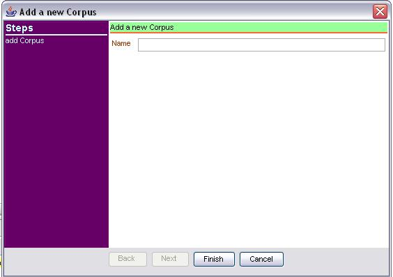

To manage yours projects (create, open, delete....) you need to use the Project Manager.
You can find in the menu Project. To open a project, select one on the list and click on the button Open.
NB : The last opened project can be quickly opened by a shortcut on the menu Project.
The project menu |
The project manager |
An opened project |
|
- Create a new project
- Import, browse a project
- Change the profile
2 steps for creating a project. The fisrt consists to give some informations about the project, i.e. the name, the folder (for storage), some comment version...
The second step it's about the grammar. You need to associate a grm file to your project. The grm file is a setup file for the grammar. It descirbes
the files which the grammar has need. When you associate a grm file, we check if all the environment variable are known for the project.
Add the end (when you click on Finish) we check the grm. If it's ok you can open the new project.
Step 1 for create a project
Step 2 for create a project
Browse and give a grm file

An unknown variable
Check the grm file with XIP
The grammar it's a set of classes of files. XIP UI permits to view this set. More over, you can view the logical structures declared in the grammar independently of the files. NB : to edit a file, double click on the row of a tree.
- The logical view
- Rule Map
- Dependencies list
- Variables list
- Categories list
- Feature map
- The file view
- declarations, rules,scripts (parameters), lexicons files
- Setup files
- Edit a grammar file
- 1 Close the edited file
- 2 Save the file
- 3 Save the file under another name
- 4 Undo
- 5 Redo
- 6 Cut
- 7 Copy
- 8 Paste
- 9 Change the size of the police
- 10 Load the research module
- 11 to previous occurence
- 12 to next occurence
- 13 Comment the line
- 14 Uncomment the line
- 15 Renumbering the layers of the file
- Make a research
- Renumembering the layers of a rules file
- Reload grammar
Visualize all rules declared in the grammar.
Select the rule map
|
The rule map |
Select the dependencies |
The dependencies |
Select the variables |
The variables |
Select the categories |
The categories |
Select the feature map |
The feature map |
There are 4 classes of files :
Déclatation, lexicons, scripts and rules.
A special class : Setup files.
All types are represented with same way.
Example : the rules files

A special editor for a grammar file. e.g : When it's possible the number of rule is indicated for the user.
A grammar file edited
The toolbar is herited from a default editor.
Buttons only for a grammar file :
The toolbar for edition
Find some test in your project
Use the find result
You need to reload after you have modified the grammar. The reload is automatic, but it can be done manually : Choose the Grammar menu and click on the Reload item.
Error during reloading
A corpus is a set of text files or XML files. You can access with the corpus manager. By double clicking on file you can edit it. By clicking with the right mouse button, you have a popup menu. A corpus menu exists also to create corpus, file or add file in a corpus.
The corpus manager
|
The corpus Menu |
A corpus edited |
|
- The input corpus
- Add new corpus
- Add file in a corpus
- Create new file in a corpus
- Modify properties of file
- Remove a corpus, file
- Prepare a corpus or file to be parsed
It's a a text file that you can edit. After each parsing, this file is saved.
The input module
To add a new corpus : Click on Add new Corpus in the Corpus menu. Or, click with right button mouse on the corpus manager and choose also Add new Corpus. A window appear. Give a name and click on Finish.
Add new Corpus
To add a new file in a corpus : Click on Add File in the Corpus menu. Or, click with right button mouse on the corpus manager and choose also Add File. Select your(s) file(s), and setup properties. The files will be added on the selected corpus.
Select File |
Select File |
Set properties |
|
Create new corpus file |
Select the type of the file |
Select the corpus, give a name and a folder |
|
You can modify some properties of a file, or a set of files (it depends of your selection). click with right mouse button and choose the item named Properties.
Select file(s) |
Properties of a corpus file |
Select file(s) (or corpus) and click with right mouse button on corpus manager. click on Remove
Remove file or corpus from the project
On the corpus manager, select corpus or file and click with right mouse button. Choose the menu named Parse. A corpus or file have this icon if it is ready to be parsed.
Select corpus or file(s) |
Some corpus ready to be parsed |
You can parse the input corpus or a set of texts, XML files. See the Manage Corpus section
for prepare a corpus ready to be parsed.
If you want parse from input : click on the Input module. Select some texte or put the
cursor on a not empty line. See Input corpus section for more information about input
To parse,you can use the run tool bar or the run menu.
The run Bar |
The Menu Bar |
- Standard XIP output
- Options for parsing
- 5 Display only the NTM output
- 6 Display only the HMM output
- 7 Add a new tab for each parsing
- 8 Open the options module
- Debug your grammar
- Generate new rules
Here an example of a standard XIP output from the input module. You can change some display options : see Options for parsing section
XIP standard output |
XIP XML output |
Run menu options

Options Module
The Debug module permits to fix a rule limit for the analysis. The chunk graph is represented by a graphical tree. The dependencies are represented by a table.
The control panel of the debuger |
The graph and the table of dependencies |
Detail of a node |
Details of a node
|
First of all , this part is under construction.... But it can already help to write new XIP rules. The generation of new rule is done from an already analysed sentence. So, the generator is an extension of the debuger module (Debuger module) to create the new rules. You can click on the chunk tree or on the table of dependencies to select some nodes, dependencies, features...
- Problem with some special Python libraries on Linux OS : the grammar can't be loaded
- Sometimes the graph is not displayed. You need to resize the window to visualize the graph.
- The text research doesn't work with characters accentuated.
- Can't reload the same Python module in the XIP environement : the grammar can't be loaded.
- After renumbering, you need 2 undo to return at the last state